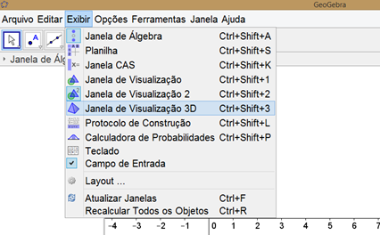
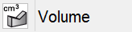

A geometria espacial foi inserida apenas na recente versão 5.0 do software e possivelmente ainda vai sofrer algumas (ou muitas) alterações e acréscimos. A barra de ferramentas da geometria espacial sofreu poucas mas significativas alterações. O que vamos ver aqui é o que foi acrescido (ou alterado) em cada ícone na barra de ferramentas. Mas antes de vermos os novos ícones e suas funções, vamos ver brevemente como abrir a janela de visualização em 3D.
Assim que você abre o GeoGebra a janela que aparece é a janela comum em 2D. Para abrir a janela de visualização em 3D, clique em exibir e depois clique em janela de visualização 3D como mostra a figura abaixo:

Após abrir a janela de visualização 3D, feche a janela de visualização 2D (se preferir) para melhor explorarmos essa função:
A figura acima mostra 3 eixos de cores diferentes: o eixo vermelho é o eixo do X, o eixo verde é o eixo do Y e o eixo azul é o eixo do Z. Na figura acima tem um plano que contém os eixos X e Y.
Caso queira configurar essa janela de visualização clique com o botão direito sobre a janela como mostra a figura e clique em “Janela de Visualização...” :
Na próxima janela que será aberta você poderá configurar alguns conceitos básicos e também poderá configurar cada eixo separadamente.
A barra de ferramentas nesse tipo de visualização é reduzida em relação à barra 2D. Para inserir as funções da barra 2D na barra de ferramentas 3D clique em ferramentas e depois em configurar a barra de ferramentas.
FINAL DO EFEITO.
Assim como a janela de visualização, a barra de ferramentas também ganhou novos ícones direcionados ao estudo da geometria espacial.
Vamos a eles:
EFEITO DEGRADÊ INÍCIO DO EFEITO:
Permite que você trace uma reta paralela a um plano. Para isso selecione um ponto e após selecione um plano e uma reta perpendicular ao plano passando pelo ponto selecionado será criada.
Cria um círculo centrado em um dos eixos. Crie um ponto qualquer, clique em um dos eixos e depois no ponto criado para criar um círculo com centro sobre o eixo selecionado e paralelo ao outros dois eixos.

Para utilizar esse recurso primeiro crie um vetor (direcionado de acordo com o circulo que você deseja criar). Clique em algum lugar no espaço onde deseja que seja o centro do círculo, depois clique no vetor e insira o valor do raio e um círculo será criado de acordo com o centro, tamanho do raio e direção que você escolheu.
Clique em duas figuras que tem interseção para criar uma curva de interseção entre as duas superfícies.
Você pode criar um plano qualquer. Para isso você precisa clicar em três pontos ou inseri-los na janela de entrada abaixo da janela de visualização. Lembrando que para criar um ponto a partir da janela de entrada digite uma letra maiúscula para designar um ponto, clique no sinal de “igual” no teclado, abra parênteses e digite os 3 números, separados por ponto e vírgula. Por exemplo : P = (2;-3;1).
Versão mais ampla do ícone anterior. Através dele além de criar um plano por 3 pontos, você também pode criar um plano de outras 3 maneiras diferentes: selecionando um ponto e uma reta, selecionando duas retas ou selecionando um polígono.
Para esse ícone você vai precisar de um ponto e uma reta. Clicando no ponto e depois na reta irá criar um plano que contém o ponto selecionado e perpendicular à reta selecionada.
Para esse recurso você vai precisar de um plano e um ponto. Clique no ponto e depois no plano para criar um plano paralelo ao plano selecionado que contém o ponto selecionado.
Vamos começar a desenhar as figuras geométricas espaciais. Para desenhar uma pirâmide, desenhe um polígono qualquer que será a base da pirâmide e depois escolha um ponto desejado para ser o vértice da pirâmide.
Crie um ponto e um polígono para ser uma das bases do prisma. Selecione o polígono e após selecione um ponto para criar um prisma (reto ou obliquo) sendo que a outra base contém o ponto selecionado anteriormente.
Crie dois pontos, selecione-os (o primeiro ponto selecionado será o centro da base e o segundo ponto selecionado será o vértice do cone) e por fim digite o tamanho do raio para criar um cone qualquer que contém os pontos selecionados.

Basta seguir a mesma explicação para criar um cone, onde os dois pontos selecionados será os centros das bases do cilindro.
Clique em um plano e em dois pontos para criar um tetraedro regular.
Siga a mesma explicação para criar um tetraedro regular, selecione um plano e dois pontos para criar um cubo.
Permite criar uma pirâmide reta ou cone reto. Basta clicar no polígono que servirá de base e digite a altura desejada.
A explicação anterior serve também para esse ícone e assim você pode criar um prisma reto ou cilindro reto.
Recurso bastante interessante para planificar qualquer poliedro. Clique no poliedro para planificá-lo. Infelizmente ainda não é possível planificar os corpos redondos, quem sabe numa atualização futura né?
Selecione dois pontos. O primeiro será o centro da esfera e o segundo será um ponto pertencente à superfície da mesma.
Um pouco diferente do ícone anterior. Nesse você digita o tamanho do raio após selecionar um ponto para ser seu centro.

Clique na figura espacial e automaticamente irá aparecer o seu volume.
Selecione um ponto e um plano para criar um novo ponto refletido em relação ao plano.

Encerramos aqui a explicação de toda a barra de ferramentas, plana e espacial, do software geogebra 5.0. Não nos aprofundaremos em todo a funcionalidade do geogebra, mas no portal https://tube.geogebra.org/ você vai encontrar todo tipo de material de apoio tanto para sua aula quanto para sua aprendizagem. O bom desse portal é que você também pode postar materiais, o uso desse portal é livre tanto para downloads quanto para uploads.
Vamos agora exercitar o que vimos nessa aula, bom estudo!
Responsável:
Centro de Educação a Distância do Ceará - CED